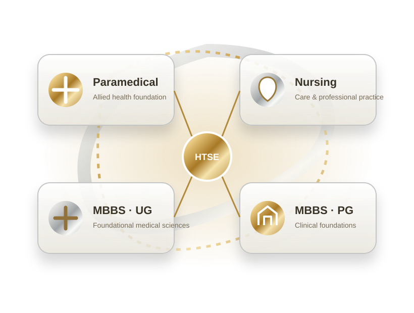
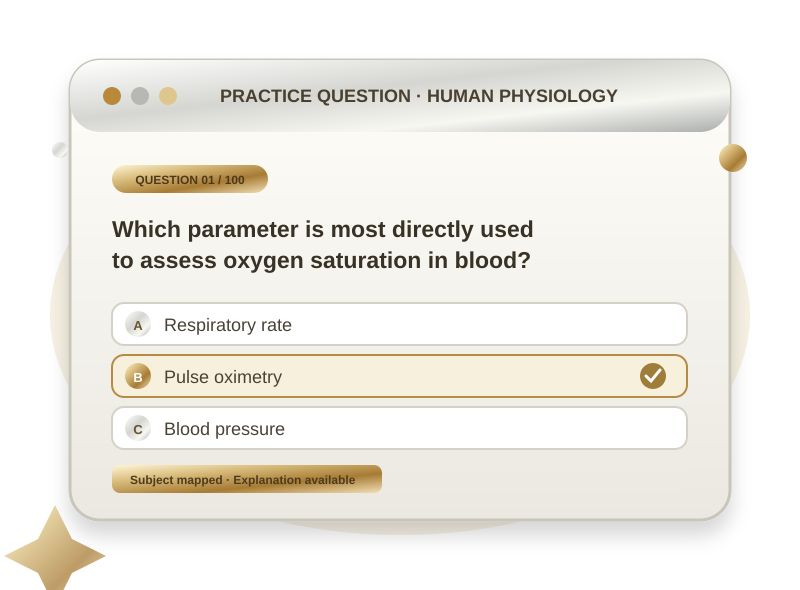

PRACTICE BEFORE YOU PROGRESSGet familiar.
Get familiar.
Think clearly.
Explore stream-wise sample questions written for easy-to-moderate foundational practice.
Original practice MCQsInstant explanationsNot official papers
Start a full mock test 
MCQPractice
preview
preview
STREAM-WISE PREVIEWQuestions that build
Questions that build
confidence.
Select a practice stream. Check the answer and read the explanation after attempting each question.
A BETTER PRACTICE LOOPUnderstand the topic.
Understand the topic.
Test your thinking.
Try a representative question from each subject group, review its explanation, then move to the full timed mock for your pathway.

Loading original practice questions…
Loading original practice questions…
Loading original practice questions…
Loading original practice questions…
Practice note: These are original illustrative questions aligned to the referenced foundational topics. They are not copied from official examination papers and should not be treated as the final HTSE question blueprint.